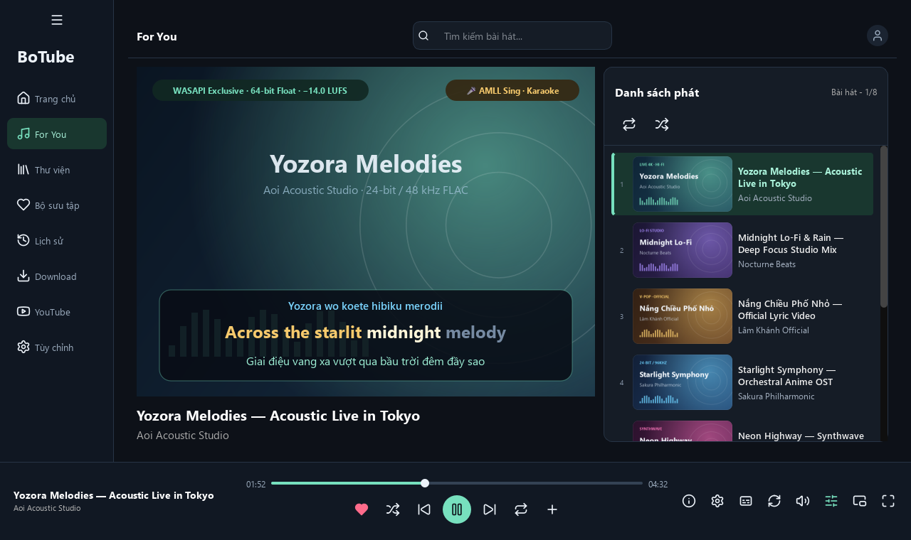

Âm thanh Hi-Fi 64-bit & Audio Lab
Chuẩn hóa âm lượng EBU R128 (−14 LUFS) khử sạch clip vượt trần, 10-Band & Parametric EQ chuẩn Squiglink/APO, hỗ trợ WASAPI Exclusive cho DAC rời và phòng đo phổ RTA đối chiếu A/B trực tiếp.
Phiên bản 6.0.2 · Dành cho Windows 10/11 64-bit
Kết hợp phát nhạc Bit-Pure WASAPI Exclusive, nhận diện lời Whisper AI, dịch đa mô hình LLM, Karaoke khớp từng chữ, phiên âm tức thì và xuất video tăng tốc GPU NVIDIA NVENC — tất cả trong một ứng dụng desktop siêu mượt.
Yozora wo koete hibiku merodii
夜空を 越えて 響く メロディー
Giai điệu vang xa vượt qua bầu trời đêm đầy sao

Đường truyền tín hiệu Bit-Pure 64-bit Float
KIẾN TRÚC PHÒNG THU TOÀN DIỆN
Thiết kế tối ưu tài nguyên CPU/RAM, khởi động tức thì và ưu tiên trải nghiệm cục bộ riêng tư trên Windows.
Chuẩn hóa âm lượng EBU R128 (−14 LUFS) khử sạch clip vượt trần, 10-Band & Parametric EQ chuẩn Squiglink/APO, hỗ trợ WASAPI Exclusive cho DAC rời và phòng đo phổ RTA đối chiếu A/B trực tiếp.
Ưu tiên lấy lời chuẩn LRCLIB / sidecar căn nhịp siêu tốc (< 1 giây), tự động chuyển sang Faster-Whisper (Tiny → Large-v3) trên GPU NVIDIA CUDA hoặc CPU với hai chế độ Lời bài hát & Hội thoại/Phim.
Dịch offline miễn phí bằng NLLB-200 hoặc dịch lời nhạc mượt mà qua Google Gemini, OpenAI (GPT-4o / GPT-5) và Anthropic Claude — kết hợp đối chiếu Genius có kiểm định độ khớp từng câu.
Hiệu ứng AMLL Sing mượt như Apple Music, khớp từng chữ/âm tiết, tạo dòng phiên âm Romaji / Pinyin / Hàn ngữ hoàn toàn offline (phím tắt R) cùng bộ hiệu ứng hạt và typography chuyên nghiệp.
Gắn phụ đề kèm đầy đủ hiệu ứng quang học vào video với canvas 16:9, 9:16 Shorts, 1:1 hoặc 4K. Tự động tăng tốc phần cứng GPU NVIDIA h264_nvenc, giữ nguyên luồng âm thanh gốc không suy hao.
Cập nhật thẳng qua GitHub Releases có kiểm định SHA-256 và tự khởi động lại an toàn. Tích hợp Yêu thích, Playlist tùy biến, Lịch sử phát thông minh (Smart Resume), tải yt-dlp chất lượng gốc và giao diện song ngữ VI/EN.
BƯỚC NHẢY VỌT PHÁT HÀNH LỚN
Máy đang cài BoTube 5.0 chỉ cần chạy BoTube_Setup.exe bản 6.0 — trình cài đặt tự nâng cấp đè sạch sẽ và giữ nguyên 100% dữ liệu.
| Hạng mục | BoTube 5.0 | BoTube 6.0 |
|---|---|---|
| Âm thanh & Đo kiểm | Preset cơ bản & cân bằng âm lượng | Hi-Fi 64-bit Float DSP, WASAPI Exclusive DAC, PEQ 10-band & phòng đo Audio Lab A/B |
| Phụ đề & Karaoke | Quét theo câu, hiệu ứng cơ bản | Karaoke khớp từng chữ thật, AMLL Sing, Phiên âm Romaji/Pinyin/Hàn offline (phím R) |
| Xuất Video + Lyric | Mã hóa CPU libx264 | Tự động tăng tốc phần cứng GPU NVIDIA h264_nvenc ⚡ + fallback CPU mượt mà |
| Quản lý thư viện | Home, For You, Library | Thêm Bộ sưu tập (Yêu thích / Playlist / Nghe nhiều nhất) & Lịch sử Smart Resume |
| Cài đặt & Ngôn ngữ | Chỉ Tiếng Việt, lưu thủ công | Studio Settings tự động lưu & chuyển đổi song ngữ 100% Việt ↔ Anh tức thì |
| Cập nhật & Tối ưu | Cài thủ công, gói đóng gói cồng kềnh | Auto-Updater GitHub Releases + SHA-256 + Inno Setup êm ái, giảm >174 MB gói cài |
BẮT ĐẦU TRONG 2 PHÚT
Tải bộ cài chính thức từ GitHub Releases. Nếu máy đã cài bản 5.0, chỉ cần chạy trực tiếp bộ cài mới — toàn bộ thư viện, phụ đề và mô hình AI được giữ nguyên 100%.
Nghe nhạc Hi-Fi, tải video và xem phụ đề có sẵn hoạt động ngay lập tức. Khi cần tạo phụ đề tự động, mở Cài đặt → Tải / Cập nhật mô hình AI để tải Whisper / NLLB.
Từ bản 6.0 trở đi, BoTube tự kiểm tra bản phát hành mới trên GitHub Releases, xác thực SHA-256 và nâng cấp chỉ bằng một cú bấm ngay trong ứng dụng.